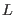
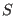
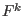
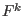

Next: Formalism Up: ic1ion - a module Previous: using ic1ion as a Contents Index
In addition to the full ic1ion module, there is a derived module, icf1ion, in which only the lowest
energy term of constant  and  is considered. Thus, the Coulomb interaction (see next section) is supposed
to have such high energy that the low temperature physical properties may be accounted for just by the spin-orbit,
crystal field, and exchange interactions. As a smaller energy matrix is required in this module, calculations will
be faster. In the cases of a single outer shell electron or hole (e.g. Ce or Yb
or Yb ), the two modules are
identical. icf1ion accepts the same inputs as ic1ion, except that the Slater integrals  are
ignored.
), the two modules are
identical. icf1ion accepts the same inputs as ic1ion, except that the Slater integrals  are
ignored.
Currently (version 4.0), the beyond dipole part of mcdisp is not yet implemented, as are the calculations of the spin and orbital moment densities. All other packages may use icf1ion.